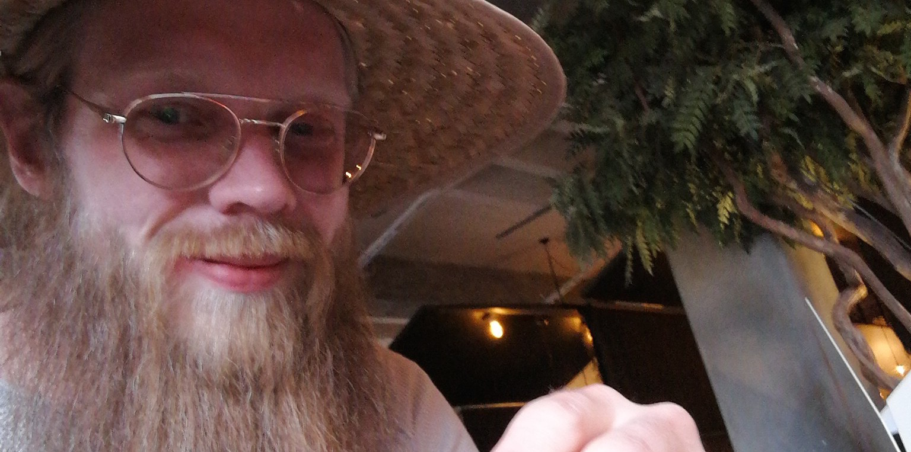

Vilka är vi?
Konceptet enbättremiddag grundades utav Johan Kärräng. Johan har arbetat på diverse arbetsplatser runt om i Sverige. Han brinner för matlagning, detta har därför gjort honom till en utav de mest eftertraktade i branchen.
När Johan stått i diverse olika kök så har en sak alltid varit densamma. Gästerna har alltid tyckt att maten varit perfekt, ofta har de frågat hur han lagar den.
En tankte började därför att växa fram i hans huvud, en sak som har blivit väldigt populär på senare år. Lärande matlagning.
Johan bestämde sig därför att öppna eget, åka hem till gästerna och låta dem laga sin egen middag. Precis som på restaurangen.
Konceptet blev väldigt populärt med en gång och resten är som man säger.. Historia.
